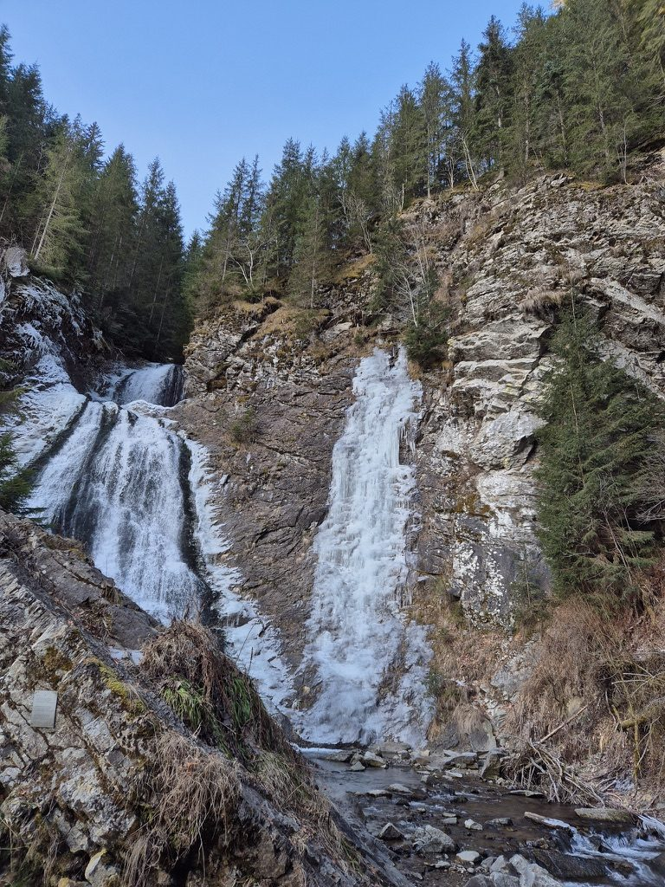
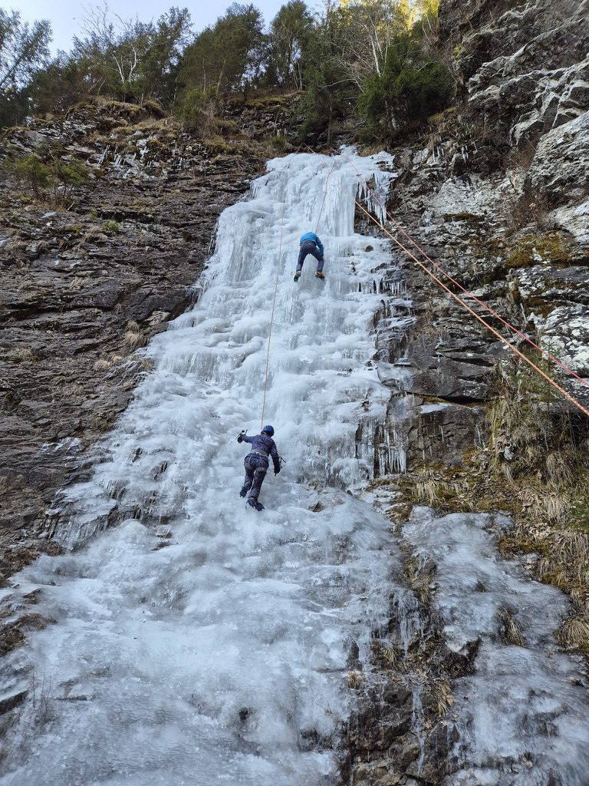
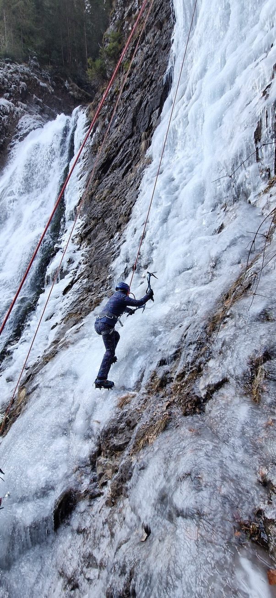
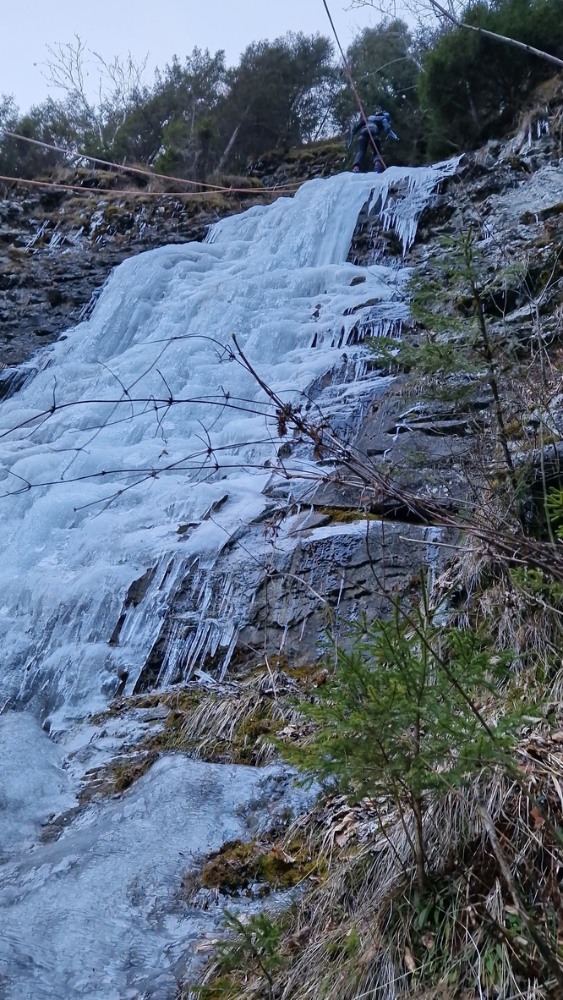
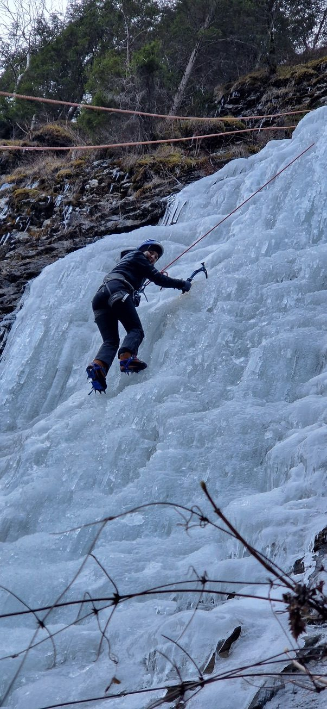
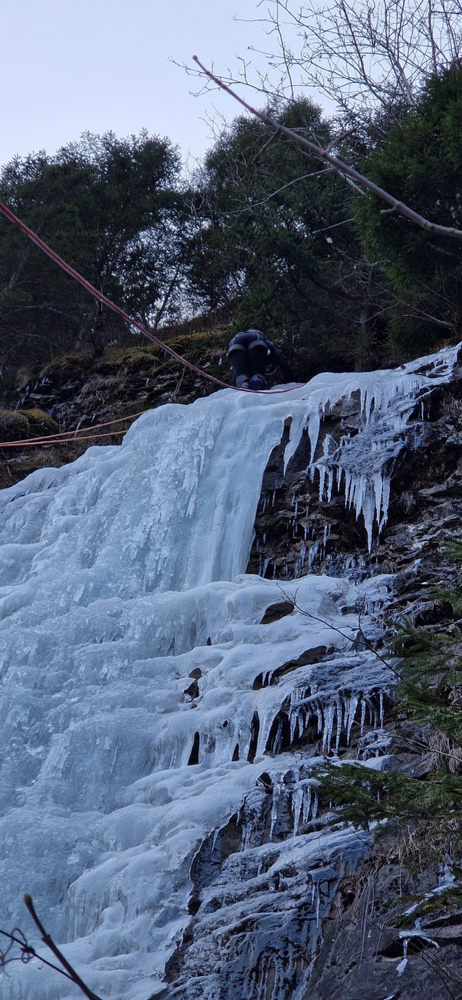

In winter, when temperatures drop far enough and hold long enough, certain waterfalls near Cluj freeze solid. The water that was moving becomes still, locked into curtains and columns of blue-white ice that coat the rock face from top to bottom. What was a waterfall becomes a climbing wall.
Cascada Mireasa — the Bride Waterfall — is one of these. It's in a gorge about 30 kilometres from Cluj-Napoca, accessible in about 40 minutes from the city. In summer it's a hiking destination. In winter, when the conditions are right, it freezes into something you can climb.

The waterfall. Left side still running. Right side solid enough to climb.
The day we went, part of the fall was still running and part had frozen. The two states of the same water, side by side — one moving, one locked in place. The frozen section was the one with ropes already rigged from an earlier group.
The gear
Ice climbing requires equipment that rock climbing doesn't use. Ice axes — short, curved tools with sharp picks on one end, one in each hand — for striking into the ice above you and hanging your weight from. Crampons — metal frames with front-pointing spikes that attach to your boots — for kicking into the ice face and standing on it. A helmet. A harness and ropes, the same as rock climbing.
The technique is different from anything else I'd tried. On rock, you read the surface — the edges, the pockets, the friction. Ice looks more uniform but behaves differently. You swing the axe and listen for the thunk that means it's set properly. You kick your front points in with a short, decisive movement and trust that they'll hold. Both require commitment. You cannot be tentative about either action and have it work.

Two on the ice. The scale of the frozen face is clearer with people on it.

On the ice. The axe is in. The crampon front-points are in. Now move.

The face that comes from being on something you weren't sure you could do.

The upper section. The icicle curtain below. Higher is quieter.
What it feels like
The first time the axe goes in and holds — properly, with that thunk — something settles. The ice is solid. The tool is in it. Your weight is on the tool. This works.
Ice climbing is colder than rock climbing in an obvious way. Your hands get cold through the gloves when you're resting on a hold. The ice in front of your face is close enough to feel the cold coming off it. When you kick the crampon in and it doesn't set cleanly the first time, you kick again — short, decisive — and when it catches there is a very specific feeling of commitment that I don't know how to describe except as: now you're here, on this thing, and the only direction is up.

The top. The last move over the edge.
The top of the ice face has a specific texture — the edge where the fall starts, where the freeze is thickest. The last few moves are technical in a way the middle isn't. You're reaching over an edge of ice to pull yourself up and over, and for a moment your feet are still on the face and your body is above it and the gorge is below you.
Then you're up. Standing on rock and ice at the top, looking back down at the route. The forest, the gorge, the frozen water. Cluj somewhere beyond the treeline.
Practical notes
- Cascada Mireasa freezes for a few weeks each winter — typically January to February if temperatures are cold enough. Some years it doesn't freeze at all
- Go with a guide or an experienced climber for your first time — rope setup on ice is different from rock
- Ice axes and crampons can be rented from climbing shops in Cluj
- The approach from the car park takes about 20 minutes on foot. Wear waterproof boots — the path is icy
- Check conditions before you go — a few warm days can change the ice significantly